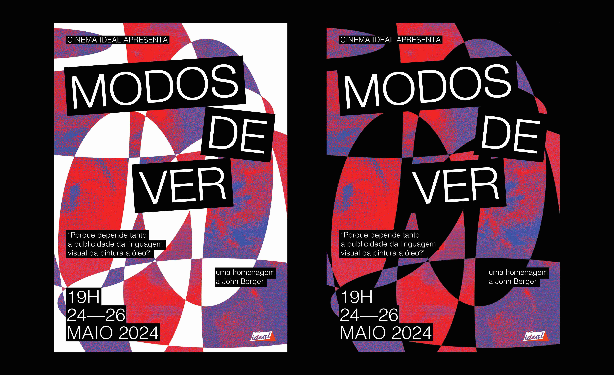
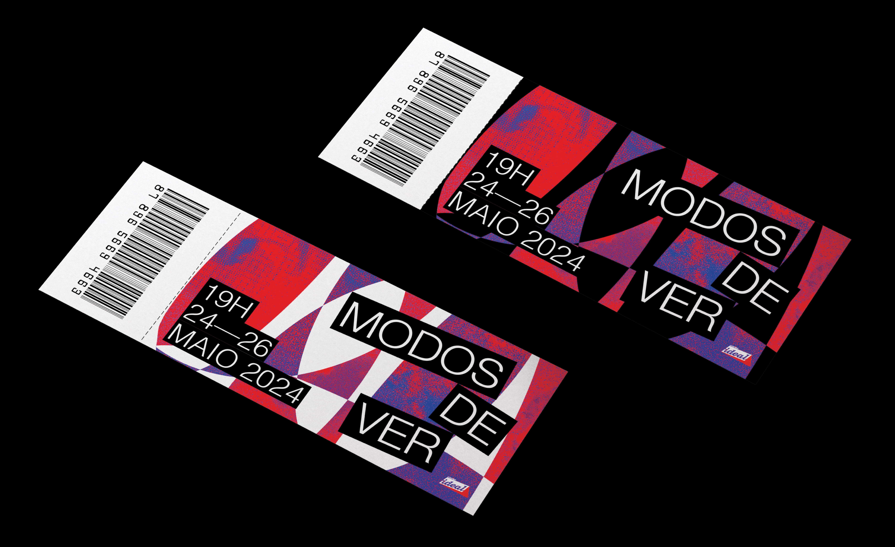
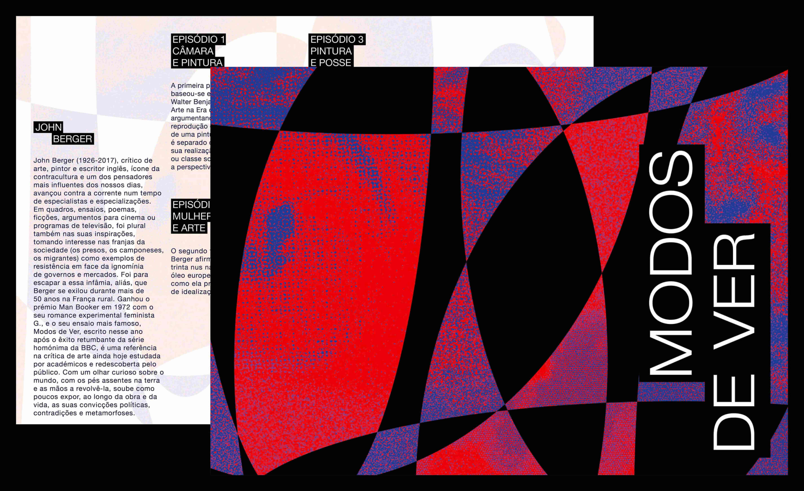
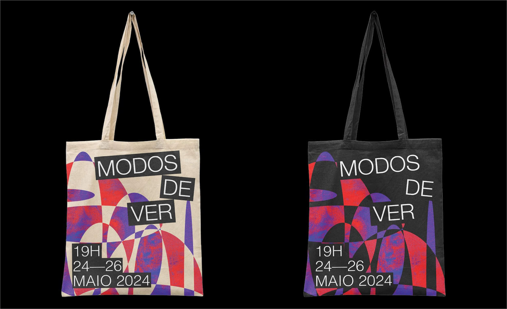

MODOS DE VER
TAGS Communication Design | Visual Identity
DATE 2024
REGIME Academic Project
INFO
Revival of the documentary series Ways of Seeing, created by John Berger and directed by Mike Dibb, presented by Cinema Ideal.
To promote this screening cycle, the project developed a distinctive visual identity rooted in an experimental, process-oriented approach. Drawing from diverse visual languages and references, the identity evokes a critical and contemporary reading of Berger’s work.
To promote this screening cycle, the project developed a distinctive visual identity rooted in an experimental, process-oriented approach. Drawing from diverse visual languages and references, the identity evokes a critical and contemporary reading of Berger’s work.
-

-

-

-
